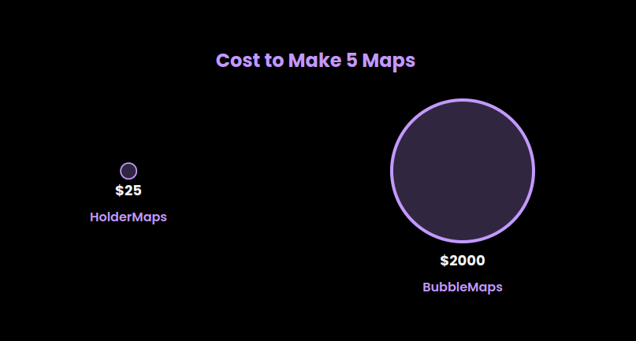

Data path
Used Dune queries to collect holder data, then normalised and prepared it for a searchable, visual product surface.
Solana ownership visualisation · 2024
A product for seeing token ownership as a network instead of a long list of addresses. The original app collected holder data, grouped relationships, and rendered the result for investigation.
sample cluster · node size = relative holding
Used Dune queries to collect holder data, then normalised and prepared it for a searchable, visual product surface.
Translated token balances and wallet relationships into a network people could inspect rather than a raw address table.
The work covered more than two million wallets across the tracked token data.
This preserved view is intentionally seeded from archived work. It makes no claim about live token ownership.

HolderMaps aimed to make a difficult ownership-analysis task more accessible. This original asset captures how the product was positioned at the time.